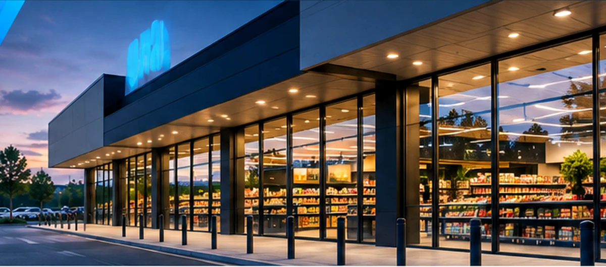
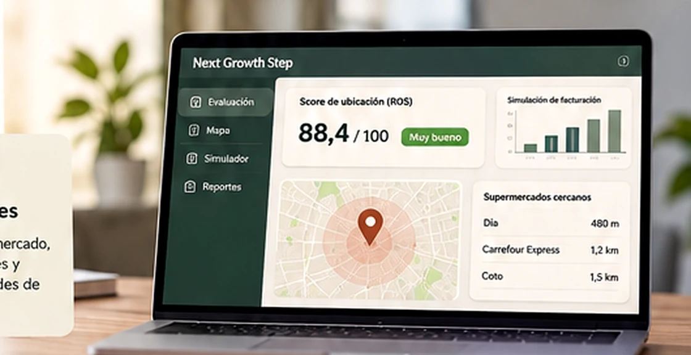

Análisis territorial
Lectura del contexto comercial y evaluación de ubicaciones.

DATOS · INMUEBLES · OPORTUNIDADES
Plataforma de análisis y oportunidades inmobiliarias para el crecimiento del retail.

VISTA CONCEPTUALNUESTRA IDEA
Es una propuesta que combina inteligencia territorial, análisis comercial y oportunidades inmobiliarias para identificar, evaluar y conectar ubicaciones con potencial.
Busca acercar en un mismo espacio a quienes tienen una propiedad, quienes necesitan un local y quienes quieren participar de oportunidades de inversión.
Lectura del contexto comercial y evaluación de ubicaciones.
Datos demográficos, competencia y herramientas comparativas.
Conexión entre inmuebles, proyectos de expansión e inversión.
ECOSISTEMA
Exposición y oportunidades de venta o alquiler para sus inmuebles.
Herramientas de análisis y conexión para concretar operaciones.
Identificación de ubicaciones para expansión y desarrollo de red.
Acceso a oportunidades e instrumentos de inversión estructurados.
MODELO COMERCIAL
Un modelo flexible que acompaña las necesidades de cada participante y permite desarrollar diferentes fuentes de ingresos.
| Perfil | ¿Cómo monetizamos? |
|---|---|
| ⌂ Propietarios | Publicación de propiedades y mayor visibilidad mediante planes destacados. |
| ♧ Brokers | Suscripciones profesionales, cartera y herramientas de análisis. |
| ▤ Empresas | Planes corporativos, evaluaciones y búsqueda de ubicaciones. |
| ◎ Inversores | Servicios vinculados a operaciones de inversión junto a socios especializados. |
Consultas limitadas
GratisPara conocer la plataformaHasta 100 consultas/mes
US$49por mes · referenciaConsultas ilimitadas*
US$99por mes · referenciaPrecios y funcionalidades ilustrativos, sujetos a definición comercial. *Sujeto a condiciones de uso.
DEL DATO A LA OPORTUNIDAD
Next Growth Step está pensado para conectar cada etapa de una operación inmobiliaria comercial.
Propiedades, localizaciones y oportunidades que puedan resultar relevantes.
Contexto territorial, actividad comercial y necesidades de cada empresa.
Propietarios, brokers y compañías con intereses compatibles.
Operaciones e inversiones a través de profesionales y socios especializados.
LA VISIÓN DE NEXT GROWTH STEP
Una propuesta para transformar cómo se identifican, presentan y desarrollan las oportunidades inmobiliarias comerciales.